This is a community resource, intended to bring together documentation, demo, and links to good sources of information about:
1. MeshBee firmware architecture; 2. MeshBee starter guide; 3. MeshBee use cases and examples;
Mesh Bee is a 2.4GHz wireless transceiver from seeed studio. It's based on NXP's newly JN516x series wireless microcontroller chip and supports ZigBee Pro network stack. The factory firmware wraps the complicated ZigBee stack operation into a few easy to use serial commands, and drives Mesh Bee into a transparent serial communication node that can be part of a simple point-to-point connection or a complex mesh network. Moreover, Mesh Bee is totally open hardware and open sourced, which means that you can customize the firmware on your requirements. You can use JN516x's ARM core to control things and JenOS to simplify your development. The development environment and tools from NXP are all free. Mesh Bee will bring you lots of fun.
Note: Mesh Bee will not communicate with Xbee as the ZigBee stack versions they're using are different.
| Specification | Value |
|---|---|
| Microprocessor | JN5168 (32-bit RISC CPU, 32MHz clock speed) |
| Resources | 256kB/32kB/4kB (Flash/RAM/EEPROM) |
| PCB size | 24.5mmx30.5mmx0.8mm |
| Outline Dimension | 24.5mmx30.5mmx9.77mm |
| Indicators | No |
| Power supply | 3.3V |
| IO counts | 12 |
| ADC input | 3(2 multiplexing with IO) |
| Interfaces | UARTx2, SPI, I2C |
| Program interface | UART+MISO |
| Connectivity | Socket compatible with XBee |
| Communication Protocol | Uart(TTL) |
| Operating Frequency Band | 2.4GHz |
| Stack/Software | RF4CE, JenNet-IP , ZigBee Pro |
| Specification | Min | Typ | Max | Unit |
|---|---|---|---|---|
| Max Input Voltage | -0.3 | 3.6 | V | |
| Working Input Voltage | 2.0 | 3.3 | 3.6 | V |
| Transmit Current | 15 | mA | ||
| Receive Current | 17 | mA | ||
| Deep Sleep Current | 0.12 | uA | ||
| Operating Temperature | -40 | 125 | °C |
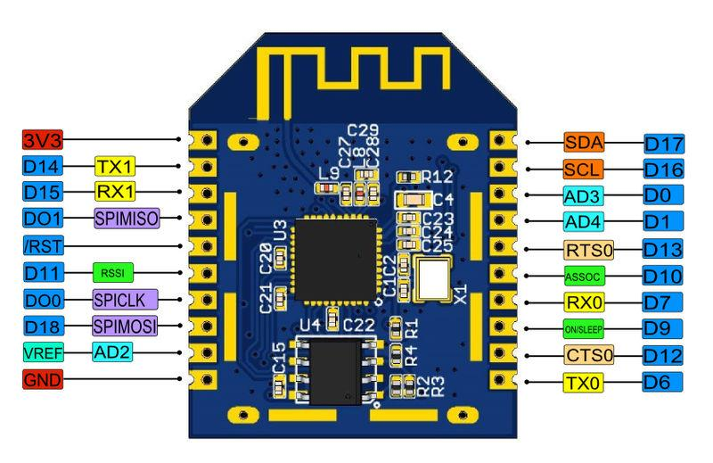
| Pin | Alternate Functions | Type | Description |
|---|---|---|---|
| 3V3 | - | Supply input | VCC, +3.3V |
| TX1 | D14 | Output | Uart1 Tx port; Digital IO 14 |
| RX1 | D15 | Input | Uart Rx port; Digital IO 15 |
| DO1 | SPIMISO | Input/Output | Digital Output 1; SPI Master In Slave Out Input |
| !RST | - | Input | Reset port |
| D11 | PWM1 | Input/Output | Digital IO 11 (default usage: RSSI Indicator); PWM1 Output |
| DO0 | SPICLK | Output | Digital Output 0; SPI Master Clock Output |
| D18 | SPIMOSI | Input/Output | Digital IO 18; SPI Master Out Slave In Output |
| VRef | ADC2 | Input | Analogue peripheral reference voltage; ADC input 2 |
| GND | - | GND | GND |
| TX0 | D6 | Input/Output | Uart0 Tx port; Digital IO 6 |
| D12 | CTS0 | Input/Output | Digital IO 12; UART 0 Clear To Send Input |
| D9 | - | Input/Output | Digital IO 9 (default usage: Mesh Bee ON/Sleep Indicator) |
| RX0 | D7 | Input/Output | Uart0 Rx port; Digital IO 7 |
| D10 | - | Input/Output | Digital IO 10 (default usage: Network Association Indicator) |
| D13 | RTS0 | Input/Output | Digital IO 13; UART 0 Request To Send Output |
| D1 | SPISEL2; ADC4 | Input/Output | Digital IO 1; SPI Master Select Output 2; ADC input 4 |
| D0 | SPISEL1; ADC3 | Input/Output | Digital IO 0; SPI Master Select Output 1; ADC input 3 |
| D16 | SCL | Input/Output | Digital IO 16; I2C clock |
| D17 | SDA | Input/Output | Digital IO 17; I2C data |
Note: Only important alternate functions are listed, may have more, please refer to JN516x data sheet.
Note2: SPI related pins can be used as digital IO only if you know how to disable the external flash driving.
The Mesh Bee has a general Bee socket. So you can use it just like XBee or RFBee etc. One thing to notice is that, the pins are not 100% compatible with each other except for part of them. If you're newer to Bee series, please follow this link to learn The Bee Series and this link to know how to install Bee with other hardware.
The default firmware pre-flashed in Mesh Bee is a co-ordinator firmware due to the manufacture and selling inconvenience. You should flash the router / end-device firmware by yourself. And it's simple enough for makers like you.
JN516x has a specific firmware download interface with a UART and some other pins, so you need a programmer to flash it. We provide this with UartSBee v5. UartSBee v5 has most of the features of v4 and in addition a programmer for Mesh Bee.
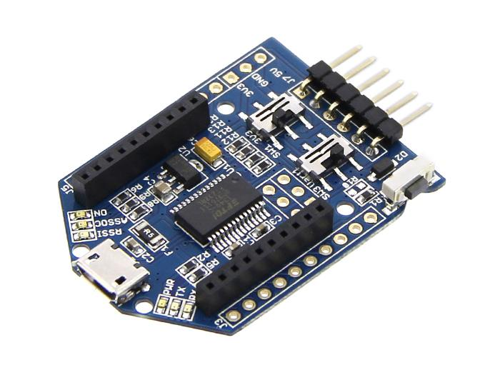
To update firmware, follow the steps:
Step 1: Download the latest firmware from github;
Mesh_Bee#9.1_Firmware_Downloads
Step 2: Configure the UartSBee v5 with FT_Prog;
Download FT_Prog: File:FT Prog v2.8.2.0.zip and install. (Windows only)
Connect the UartSBee v5 to PC, open FT_Prog and configure it like this:
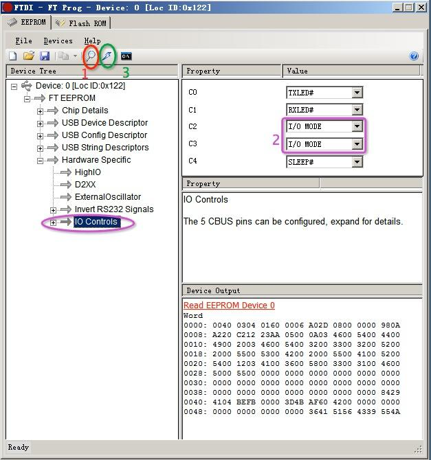
Step 3: Switch the SW1 to "3V3" and SW3 to "Prog" position;
Step 4: Plug the Mesh Bee module into UartSBee v5 ;
Step 5: Flash firmware with "Jennic Flash Programmer";
Download Jennic Flash Programmer: File:Jennic flash programmer.zip and unzip. (Windows only)
Open "FlashGUI.exe" -> browser to the firmware bin file
-> select COM port of UartSBee v5 (if not exist, click Refresh button)
-> other selections just like the following picture -> check "Connect"
-> the device information and MAC address will be detected
-> click "Program" button
-> A small tool window will pop up and the downloading progress will be displayed
-> finish.
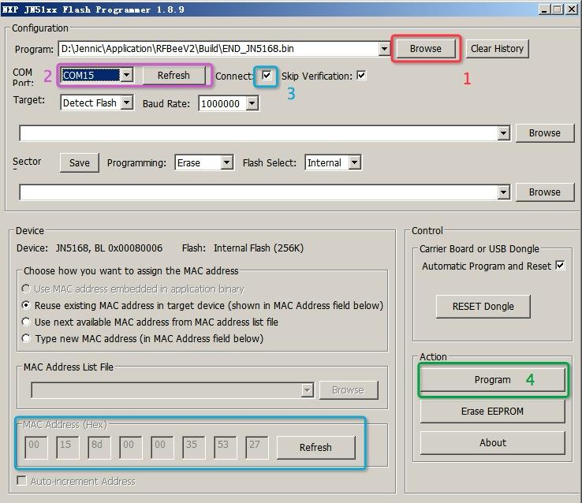
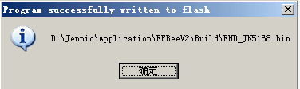
The Mesh Bee can be configured with AT commands by now. The binary API configuration method may be provided on your needs. So please post your requirements to the discussion group if you need this feature. We'll make the developing decision based on your voices.
Download the AT command manual: File:AT command manual for Mesh Bee V1.0.pdf
The Mesh Bee supports ZigBee Pro standard which can construct a mesh network with a large number of nodes. You may need some ZigBee basics to configure it more effective. But here's a guide of how to form a simple point-to-point network. Everyone can make this without any ZigBee basic knowledge.
Step 1: Get two Mesh Bee modules and a UartSBee v5 ready;
Step 2: Flash the End-Device firmware into one of the two Mesh Bee, please refer to 5.2 How to update firmware;
Step 3: Configure the co-ordinator node;
To configure a Mesh Bee node, you should firstly connect it to PC. There're many ways to do this. If you have a UartSBee v5, it gets greatly easy. Just plug the co-ordinator into UartSBee v5 and switch SW3 to "Uart" side.
In addition, you can use any USB-to-TTL devices. The basic thing is Mesh Bee communicates with outside through UART1(TX1&RX1) and UART1's voltage level is 3.3V. Higher voltage may break down the IO.
After wire connection, open a serial tool, select the COM port and set the band rate to 115200(default).
Send "+++" to turn Mesh Bee into AT command mode. Notice that you should configure your serial tool to send the CR character.
Send "ATPA1" command.
Press the reset button of UartSBee v5 to reset Mesh Bee.
Wait until the "ASSOC" led of UartSBee v5 light up. OK, the co-ordinator has finished the formation of ZigBee network. You can send "ATIF" command to view the network information.
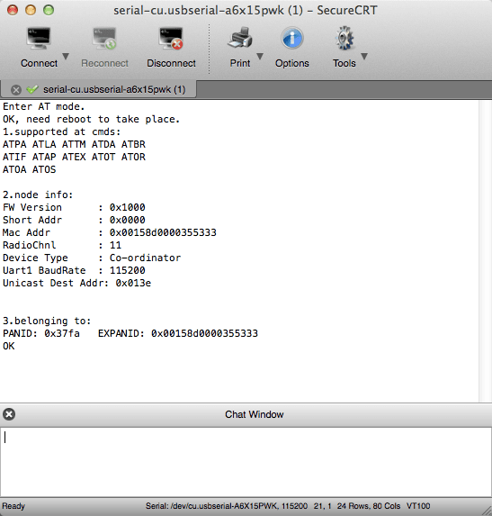
Send "ATEX" command to exit AT mode and enter data transmit mode. Now the co-ordinator node is set up.
Step 4: Configure the end-device node;
First, connect to end-device's UART1 with baud rate 115200. Note that if you have only 1 UartSBee v5 and want to configure the end-device with the same one, you should power the co-ordinator on again after it's un-plugged from UartSBee v5. The co-ordinator should always be powered on because it holds the created ZigBee network. If it's down, the network's gone.
Send "+++" to end-device.
-> Then send "ATAJ1" command.
-> Send "ATRS" command
-> Wait a few seconds
-> The "ASSOC" led of UartSBee v5 light up (configure with UartSBee v5).
-> Send "ATIF" command, check out the "PANID" of "3. belonging to" section, if "PANID" isn't 0x0000, then end-device has joined the ZigBee network.
Now send "ATEX" command to exit AT mode.
OK, end-device's well configured.
Step 5: Test the connection;
Connect the two nodes (co-ordinator & end-device) with serial tool. Send data on one side, and check whether the same data's received on the other side.
The connection information will be saved persistently over power off.
Mesh Bee supports updating firmware over-the-air. That is, once you finished the network configuration, the router/end-device's firmware can be updated by OTA.
Step 1: Flash a new firmware into co-ordinator's external flash.
To achieve this step all you should do is very mush similar to 5.2 How to update firmware, the only difference is choosing "External" for "Flash Select".
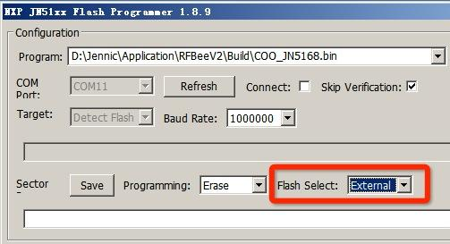
Step 2: Make sure that the network is correctly configured and nodes can communicate with others.
Configure the network nodes as described 5.3.2_Configuration. Send "ATLA" command to view the nodes on the network.
Step 3: Trigger the OTA process.
Send "ATDAxxxx" command to set the destination address (xxxx is the node's short address whose firmware will be updated)
-> Send "ATOR200" to set ota packet interval to 200ms/packet. Slower will be better.
-> Send "ATOT" to trigger the OTA download process
-> Send "ATOS" to monitor the download processing, or send "ATOA" to abort the download if you want to.
When download is finished, the target node will reboot and the new firmware will take the place. You can send "ATLA" command to confirm the target's FW version.
This example is only compatible with firmware v1.0, for later versions firmware, please refer to the Cook Book which can be downloaded in the Resources section.
This is a simple example about remote control with 2 Mesh Bee nodes.
Step 1: Prepare the materials
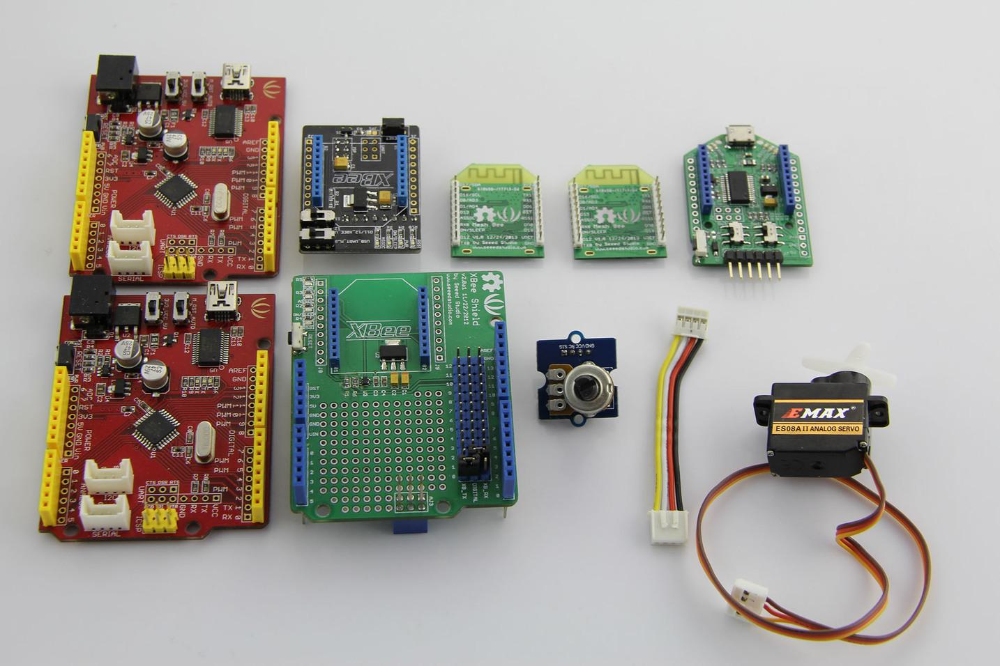
They are:
Step 2: Configure Mesh Bee nodes
Refer to 5.3.2_Configuration to configure a p2p connection.
Step 3: Assembly the Servo side (be controlled)
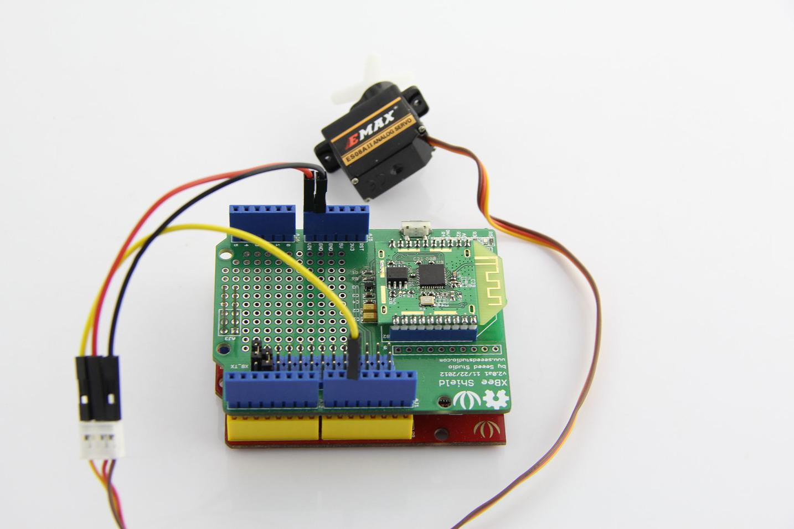
Connect servo's signal line(yellow) to Digital 10, red line to VCC and black/brown line to GND
-> Connect "XB_TX" with D0 and connect "XB_RX" with D1 (means using the hardware UART of seeeduino)
-> Plug Mesh Bee (co-ordinator) into XBee shield's Bee socket
-> Don't forget plugging XBee shield onto Seeeduino D:
Step 4: Assembly the control side
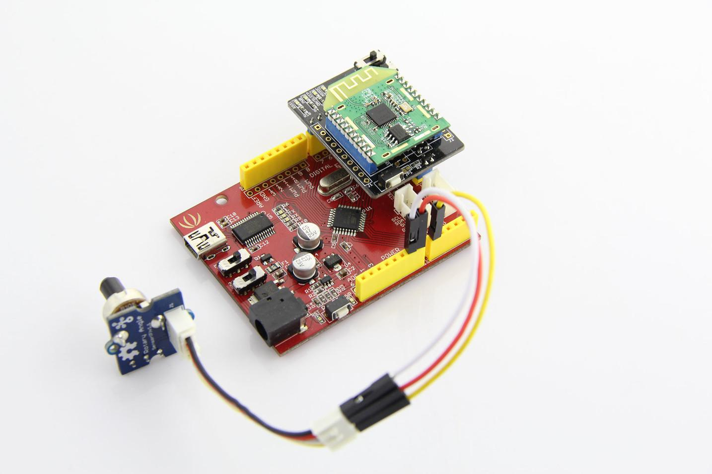
Connect rotary angle's signal line(yellow) to A0, red line to VCC and black line to GND
-> Switch XBee Shield v1's "USB_UART_M..8" switch to right side (M..8) and "D11/12_XBEE_UART" switch to right side (X_RX_X_TX)
-> Plug Mesh Bee (end-device) into XBee shield's Bee socket
-> Plug XBee Shield onto Seeeduino
Step 5: Program
MeshBeeDemo_servo:
#include <Servo.h>
#include <SoftwareSerial.h>
#define CMD_POS 1
#define COMM_SER Serial
//SoftwareSerial mySerial(11, 12); // RX, TX
Servo myservo; // create servo object to control a servo
// a maximum of eight servo objects can be created
int pos = 0; // variable to store the servo position
unsigned int sensorValue = 0; // variable to store the value coming from the sensor
unsigned char cmd;
unsigned int lastSensorValue = 0;
void setup()
{
Serial.begin(115200);
//mySerial.begin(9600);
myservo.attach(10); // attaches the servo on pin 9 to the servo object
//config Mesh Bee
Serial.println("atex");
}
void loop()
{
if (read_msg(&cmd, &sensorValue))
{
if (cmd == CMD_POS)
{
if (lastSensorValue != sensorValue)
{
lastSensorValue = sensorValue;
//Serial.println(sensorValue);
pos = map(sensorValue, 0, 1023, 0, 180);
myservo.write(pos);
}
}
}
//delay(10);
}
void send_msg(unsigned char cmd, unsigned int msg)
{
unsigned char buff[4];
buff[0] = cmd;
buff[1] = (unsigned char)(msg & 0xff);
buff[2] = (unsigned char)((msg >> 8) & 0xff);
buff[3] = buff[0]+buff[1]+buff[2];
COMM_SER.write("SS");
COMM_SER.write(buff, 4);
}
boolean read_msg(unsigned char *cmd, unsigned int *msg)
{
unsigned char buff[4];
if (COMM_SER.find("SS"))
{
while (COMM_SER.available() < 4);
if (COMM_SER.available() >= 4)
{
COMM_SER.readBytes((char *)buff, 4);
if (buff[0] + buff[1] + buff[2] == buff[3])
{
//available packet
*cmd = buff[0];
*msg = (unsigned int)((buff[1]) | (buff[2] << 8));
return true;
}
}
}
return false;
}
MeshBeeDemo_analogInput:
#include <SoftwareSerial.h>
#define CMD_POS 1
#define COMM_SER Serial
//SoftwareSerial mySerial(10, 11); // RX, TX
int sensorPin = A0; // select the input pin for the potentiometer
int sensorValue = 0; // variable to store the value coming from the sensor
int lastSensorValue = 0;
void send_msg(unsigned char cmd, unsigned int msg);
boolean read_msg(unsigned char *cmd, unsigned int *msg);
void setup()
{
// Open serial communications and wait for port to open:
Serial.begin(115200);
Serial.println("+++");
Serial.println("ATTM1"); //set Mesh Bee into unicast tx mode
Serial.println("ATDA0000"); //set the unicast address to COO
Serial.println("ATEX"); //exit the AT command mode
// set the data rate for the SoftwareSerial port
//mySerial.begin(9600);
//mySerial.println("Hello, world?");
}
void loop() // run over and over
{
// read the value from the sensor:
sensorValue = analogRead(sensorPin);
if (sensorValue != lastSensorValue || 1)
{
//Serial.println(sensorValue);
send_msg(CMD_POS, (unsigned int)sensorValue);
lastSensorValue = sensorValue;
delay(50);
}
}
void send_msg(unsigned char cmd, unsigned int msg)
{
unsigned char buff[4];
buff[0] = cmd;
buff[1] = (unsigned char)(msg & 0xff);
buff[2] = (unsigned char)((msg >> 8) & 0xff);
buff[3] = buff[0]+buff[1]+buff[2];
COMM_SER.write("SS");
COMM_SER.write(buff, 4);
}
boolean read_msg(unsigned char *cmd, unsigned int *msg)
{
unsigned char buff[4];
if (COMM_SER.find("SS"))
{
while (COMM_SER.available() < 4);
if (COMM_SER.available() >= 4)
{
COMM_SER.readBytes((char *)buff, 4);
if (buff[0] + buff[1] + buff[2] == buff[3])
{
//available packet
*cmd = buff[0];
*msg = (unsigned int)((buff[1]) | (buff[2] << 8));
return true;
}
}
}
return false;
}
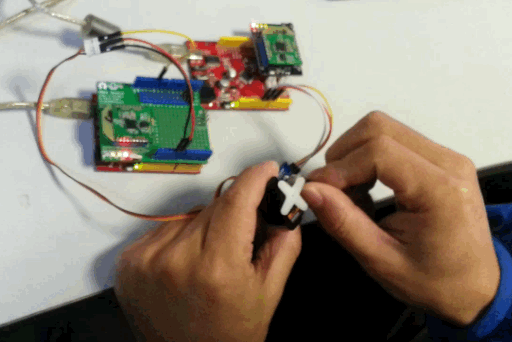
ZigBee is a low-power & low-speed networked transmission protocol. So it's not designed for high speed situation.
The data rate specification of Mesh Bee network with 2~3 nodes:
| Transmission Direction | Transmit Method | Packet Period (ms) | Max Packet Length (bytes) |
|---|---|---|---|
| COO/ROU | Broadcast | 250 | 50 |
| COO/ROU -> END | Unicast | 40 | 50 |
| END | Broadcast | 150 | 50 |
| END -> COO/ROU | Unicast | 20 | 25 |
| END -> COO/ROU | Unicast | 40 | 50 |
The data rate will be lower for a bigger network.
The biggest feature we want to introduce is Mesh Bee supports re-programming. What an excitement having a programmable ZigBee module with such a reasonable price.
Mesh Bee uses the chip named JN5168 with a 32-bit RISC core and rich resources:
With our UartSBee v5 you can easily re-program Mesh Bee. There's just a little step of learning some NXP documents before playing good.
This is the software architecture of Mesh Bee.
You can develop a stand-alone application in AUPS. The user application consists of two arduino-style functions at the top level: setup & loop, which act just like arduino's.
We introduced Suli too. Suli means Seeed Unified Library Interface. We'll switch to Suli for our future module driver/library release. That means our suli-compatible library/driver will adapt all platforms that suli supporting. Please glance over https://github.com/Seeed-Studio/Suli for more information.
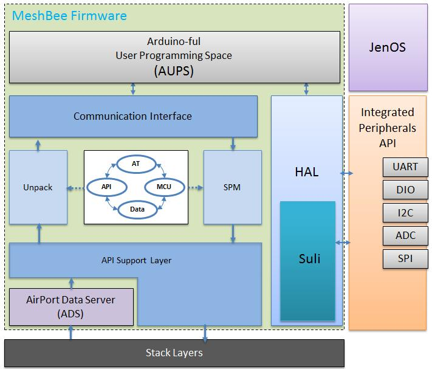
NXP provides full-scale development environment, tools and documents. The development environment consists of the SDK toolchain and the ZigBee stack SDK.
Please goto NXP's website to have all these resources with a detailed description page: http://www.nxp.com/techzones/wireless-connectivity/smart-energy.html
Note: Mesh Bee's factory firmware is developed on top of the Smart Energy profile.
To create the development environment you should download:
and then install them on a Windows PC (install JN-SW-4064 after JN-SW-4041).
To edit the .oscfgdiag file and .zpscfg file, you should install the eclipse plugins according to the guide in section 6.2.2 in <SDK Installation and User Guide.pdf>.
Note2: The misfortune is only Windows toolchain is presented now. For linux and Mac users, a Windows VM may be your choice.
Programming JN5168 needs some base knowledge, so it's hard to explain in a few words. Digging into the official documents maybe is a must.
NXP official resources:
User Guides
Application Notes
Related Documentation
Download page: http://www.nxp.com/techzones/wireless-connectivity/smart-energy.html
We created a google group for Mesh Bee's general discussion and development related topics. Please follow this link to see what's happening there: https://groups.google.com/forum/#!forum/seeedstudio-mesh-bee-discussion-group
v1001 (factory firmware, the most stable version so far):
Co-ordinator's firmware: https://github.com/Seeed-Studio/Mesh_Bee/raw/v1.0.01/Build/COO_JN5168.bin
Router's firmware: https://github.com/Seeed-Studio/Mesh_Bee/raw/v1.0.01/Build/ROU_JN5168.bin
End-device's firmware: https://github.com/Seeed-Studio/Mesh_Bee/raw/v1.0.01/Build/END_JN5168.bin
v1004
Co-ordinator's firmware: https://github.com/Seeed-Studio/Mesh_Bee/raw/v1.0.4/build/output/COO_JN5168.bin
Router's firmware: https://github.com/Seeed-Studio/Mesh_Bee/raw/v1.0.4/build/output/ROU_JN5168.bin
End-device's firmware: https://github.com/Seeed-Studio/Mesh_Bee/raw/v1.0.4/build/output/END_JN5168.bin
Sync with our development and releases:
https://github.com/Seeed-Studio/Mesh_Bee/releases
More information about Mesh Bee's firmware: